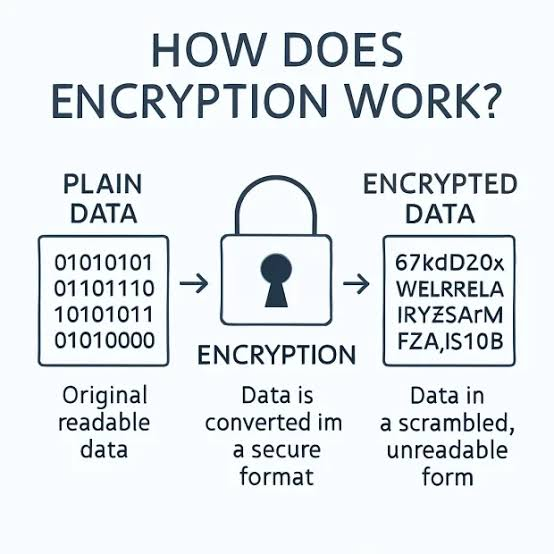
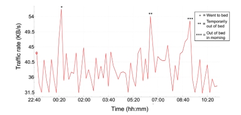

What your smart home devices can reveal about you, and how you can protect yourself?
Smart-home privacy across the data life cycle: how ordinary device data can reveal household behavior and how users can protect themselves
There’s no doubt that smart home devices make everyday life more convenient, but their function of turning regular activities into data may be a privacy risk. Imagine your morning routine in a home filled with smart devices. At 6 AM, your alarm wakes you up. Maybe you stay in bed for a while, not ready to face the day, but force yourself out at 6:30 when you open your blinds and ask your voice assistant for the weather forecast of the day. At 7 AM you turn on your connected coffee maker and various other smart kitchen appliances. By 8 AM you’re out the door, where the sensor by the front door detects motion and your smart lock logs that it was you who left the house. Alone, these details may seem harmless and ordinary, but these details can reveal when people are at home, asleep or even specifics about your routine. This matters because users don’t often know exactly where their data goes, who can gain access to it, and if their data is being properly protected.
So do people actually understand the risks that come with smart home devices? Do they understand how these devices work?
Unfortunately that doesn’t seem to be the case. In one study it was found that “While participants mentioned some threats and protective measures, they often estimated the privacy and security risks from their smart home devices to be too low to trigger any actions. [1]” Another study, this one conducted by Zeng, wanted to learn what smart device owners understood about their device and what worried them about this technology. They interviewed 15 people living in smart homes and found that participants had a limited or incomplete understanding of the risks that come with these devices. This was likely because their understanding was dependent on their technical knowledge of how their devices worked [2].
So how do these devices work?
Before we get into what these smart devices can reveal about a household, it’s important to understand how devices communicate with each other. Take a smart thermostat for example. When a smart thermostat sends a reading, that information gets sent over a network. The flow of that information is called network traffic. One important fact is that the information doesn’t get sent in one large piece. Instead, data gets broken down into smaller pieces called packets, with each packet containing a portion of the whole information.
Devices also need rules they’ve agreed upon ahead of time to communicate with each other. These rules are called protocols, and they let different devices and systems exchange information in a way they can understand.
Before data gets transmitted, an algorithm turns the understandable data (plaintext) into an unreadable format (ciphertext). This process is called encryption. To better understand this concept, think of a sealed envelope. The letter inside the envelope is private, just like the now-scrambled data. But not everything is hidden. You can still see who sent the envelope, who the envelope is going to, and how thick the envelope is, just like you can see in data packets.

Add img/figure1.png here'">So, what can researchers infer about a household when the device’s messages are encrypted?
Turns out, they can learn quite a bit about a household. We’ve established that encryption changes readable information into a form that should be difficult for an unauthorized person to understand. This means that if someone captures an encrypted message, they may not be able to read its contents. However, they may still be able to observe when communication happens, how often it happens, and how much data is sent. Researchers found that “..an ISP or other network observer can infer privacy sensitive in-home activities by analyzing Internet traffic from smart homes containing commercially available IoT devices even when the devices use encryption. [3]” Encryption protects the message itself, but not necessarily the behavior surrounding the message.
Figure 2 shows an experiment researchers did monitoring sleep monitors encrypted traffic. Even with the traffic being encrypted, you can still see patterns, the spikes in the graph. After analyzing the patterns, researchers were able to infer certain behaviors that matched them. As the figure shows, they were able to pinpoint when some was awake and when they were asleep.

Add img/figure2.png here'">Are these vulnerabilities limited to a few devices?
While Apthrope and his research team studied a limited number of smart home devices, research done by Huang at IoT Inspector expanded upon that study to include over 54,000 devices from different users. From that pool, they analyzed traffic from 6,776 devices. They found that 51.1% of those devices communicated through port 80, a port known for unencrypted HTTP traffic. This meant that those devices potentially communicated without encryption. Those devices came from 69 different vendors. They also found that 375 devices from 26 different vendors used outdated encryption methods (outdated TLS versions) [4].
They also checked who the devices communicated with, and found that tracking communication was common in some devices. Almost 60% of Nvidia devices and almost 50% of Roku devices contact tracking domains, along with “... smart TVs from at least 10 vendors communicate with advertising and tracking services” [4].
Outside connections aren't always malicious. They can be important for updating the device or cloud features. The concern comes from additional services potentially having access to device related information. When a device sends unencrypted information, people or organizations watching the network path can observe the data. This can include information that identifies the device, such as how it's being used, or information on the household. Older encryption protocols can leave the device vulnerable to known attack techniques, even though the study did not document an actual attack against any devices they were observing [4].
Third party control organizations that are able to get device related status information can allow these services to guess parts of a person’s lifestyle. For example, if they were to track when a smart plug turns on or off, they can infer when you are awake or asleep, if you are at home, or even routines within your household.
Can’t I just read the manufacturer’s privacy policy?
You can, but fully relying on these disclosures may not be as much help as you’d think. Privacy documents are often hard to find, rely on vague terms like and frequently leave out specifics regarding every product that is offered by the manufacturer [5].
In a study conducted by Manandhar, about 11% of the 596 vendors they looked at did not provide a privacy policy at all. Only about 49% of vendors had policies that applied to smart home devices. Almost 66% of all policies examined in the study used broad, general terminology and 25% of all policies had incomplete coverage [5]. This means that a consumer may agree to a policy without knowing the specifics of what the policy is referring to. “Device data” can refer to a motion sensor, a camera recording or even a detailed record of activity of a household.
What about the apps that come with my device?
Many smart devices are accompanied by companion applications that connect these devices to users and cloud services. Nan and his team studied 6,208 companion applications and found that about 1,973 applications exposed IoT data without proper disclosure in their associated privacy policies. This data included sensitive information such as heart rate, blood pressure, weight and BMI. The researchers found no evidence that this data was properly disclosed in the vendors’ privacy policies [6].
Nan and his team also found that around 9% of applications sent IoT data to more than 695 unauthorized third parties, which included data brokers, health related platforms and services located in different countries. Their findings suggest that users may not get a clear explanation of what their devices and companion apps are sending online [6].
So what can you do?
Here are some steps you can take to protect yourself.
- Keep devices and companion apps updated to fix known security weaknesses.
- Reduce unneeded collection and storage. This will reduce the amount of past footage that could be exposed if someone gains unauthorized access to it.
- Making sure to not rely on privacy policies fully, you can still use them to make informed decisions. Look for what information your particular device collects, who receives it, and what choices you have. Then connect that information to actionable items.
These steps reduce certain risks, but they don’t necessarily hide the traffic patterns that we discussed earlier. It is the responsibility of manufacturers to provide secure products and transparent disclosures to their users.
Understanding what our devices can reveal will help us make more intentional choices about the convenience that we accept into our daily lives and the potential privacy trade-offs that come with that convenience.
Works Cited:
- M. Tabassum, T. Kosinski, and H. R. Lipford, “‘I Don’t Own the Data’: End User Perceptions of Smart Home Device Data Practices and Risks,” in Proc. 15th Symposium on Usable Privacy and Security, Santa Clara, CA, USA, 2019, pp. 435–450. [Online]. Available: https://www.usenix.org/conference/soups2019/presentation/tabassum
- E. Zeng, S. Mare, and F. Roesner, “End User Security and Privacy Concerns with Smart Homes,” in Proc. 13th Symposium on Usable Privacy and Security, Santa Clara, CA, USA, 2017, pp. 65–80. [Online]. Available: https://www.usenix.org/system/files/conference/soups2017/soups2017-zeng.pdf
- N. Apthorpe, D. Reisman, S. Sundaresan, A. Narayanan, and N. Feamster, “Spying on the Smart Home: Privacy Attacks and Defenses on Encrypted IoT Traffic,” arXiv preprint arXiv:1708.05044, 2017. [Online]. Available: https://arxiv.org/pdf/1708.05044
- D. Y. Huang, N. Apthorpe, F. Li, G. Acar, and N. Feamster, “IoT Inspector: Crowdsourcing Labeled Network Traffic from Smart Home Devices at Scale,” Proc. ACM Interact. Mob. Wearable Ubiquitous Technol., vol. 4, no. 2, Art. no. 46, Jun. 2020, doi: 10.1145/3397333.
- S. Manandhar, K. Kafle, B. Andow, K. Singh, and A. Nadkarni, “Smart Home Privacy Policies Demystified: A Study of Availability, Content, and Coverage,” in Proc. 31st USENIX Security Symposium, Boston, MA, USA, 2022, pp. 3521–3538. [Online]. Available: https://www.usenix.org/conference/usenixsecurity22/presentation/manandhar
- Y. Nan, X. Wang, L. Xing, X. Liao, R. Wu, J. Wu, Y. Zhang, and X. Wang, “Are You Spying on Me? Large-Scale Analysis on IoT Data Exposure through Companion Apps,” in Proc. 32nd USENIX Security Symposium, Anaheim, CA, USA, 2023, pp. 6665–6682. [Online]. Available: https://www.usenix.org/conference/usenixsecurity23/presentation/nan
Figure References:
- “How does encryption work” (LoginRadius), https://www.loginradius.com/assets/blog/engineering/encryption-and-hashing/how-does-encryption-work.webp
- N. Apthorpe, D. Reisman, S. Sundaresan, A. Narayanan, and N. Feamster, “Spying on the Smart Home: Privacy Attacks and Defenses on Encrypted IoT Traffic,” arXiv preprint arXiv:1708.05044, 2017. [Online]. Available: https://arxiv.org/pdf/1708.05044